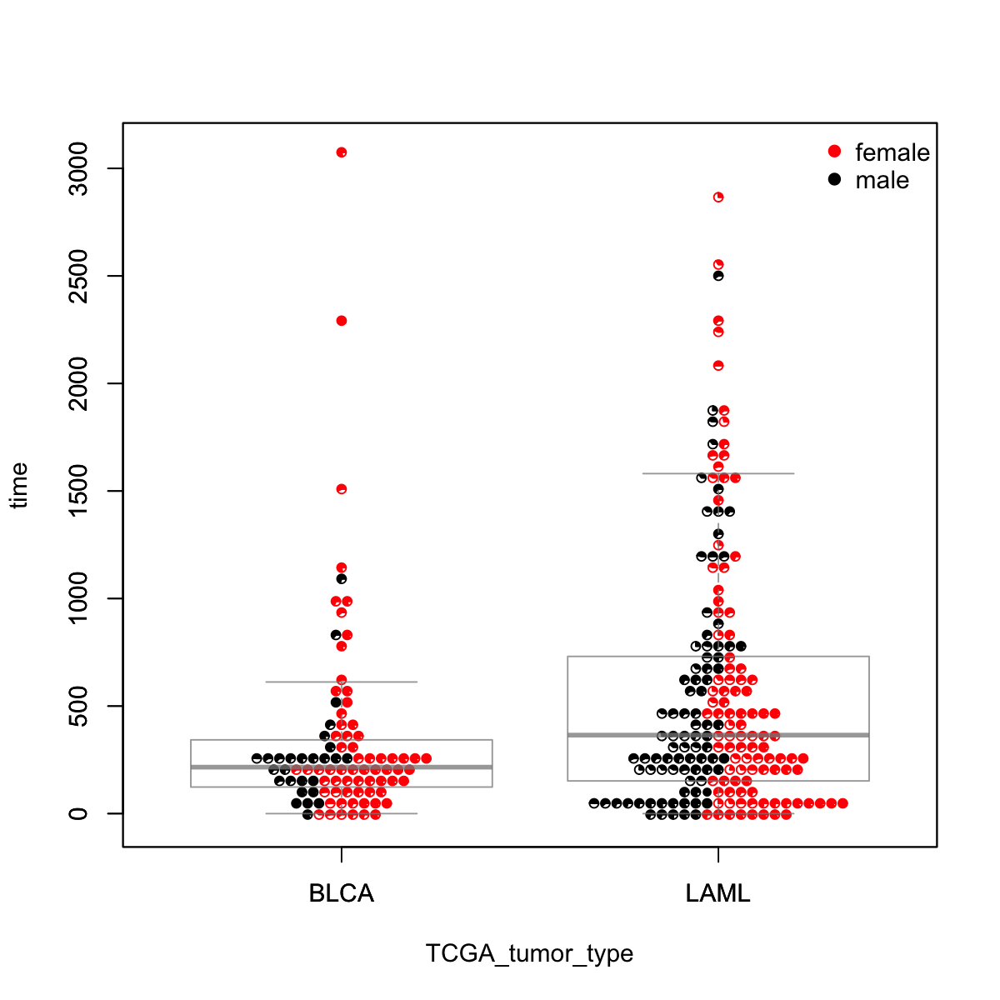

<!DOCTYPE html>
<html lang="en">
  <head>
    <meta charset="utf-8">
<title>visBoxplotAdv @ dnet 1.0.1</title>
<meta name="viewport" content="width=device-width, initial-scale=1.0">
<meta name="author" content="">

<link href="css/bootstrap.css" rel="stylesheet">
<link href="css/bootstrap-responsive.css" rel="stylesheet">
<link href="css/highlight.css" rel="stylesheet">
<link href="css/staticdocs.css" rel="stylesheet">


<style type="text/css">

.navbar .brand {
  display: block;
  float: left;
  padding: 8px 20px 12px;
  margin-left: -20px;
  font-size: 20px;
  font-weight: 200;
  line-height: 1;
  color: #999999;
}

.navbar .brand:hover {
  color: #F87217;
  text-decoration: none;
  background-color: transparent;
}

.navbar .nav > li > a:hover {
  color: #F87217;
  text-decoration: underline;
  background-color: transparent;
}

</style>


<!--[if lt IE 9]>
  <script src="http://html5shim.googlecode.com/svn/trunk/html5.js"></script>
<![endif]-->

<!-- google analytics -->
<script type="text/javascript">

  var _gaq = _gaq || [];
  _gaq.push(['_setAccount', 'UA-17338744-2']);
  _gaq.push(['_trackPageview']);

  (function() {
    var ga = document.createElement('script'); ga.type = 'text/javascript'; ga.async = true;
    ga.src = ('https:' == document.location.protocol ? 'https://ssl' : 'http://www') + '.google-analytics.com/ga.js';
    var s = document.getElementsByTagName('script')[0]; s.parentNode.insertBefore(ga, s);
  })();

</script>

<!-- Enlarge image -->
<script type="text/javascript">
    function newWin(url, name, width, height) { 
       
        var left = (screen.width/2)-(width/2);
        var top = (screen.height/2)-(height/2); 
        
        window.open(url,name,'scrollbars=yes,resizable=yes,fullscreen=yes, width=' + width + ', height='+height+', top='+top+', left='+left);
    }
</script>
  </head>

  <body>
    <div class="navbar">
  <div class="navbar-inner">
    <div class="container">
      <a class="brand" href="index.html">dnet 1.0.1</a>
      <div class="nav">
        <ul class="nav">
          <li><a href="index.html"><i class="icon-home icon-white"></i> Home</a></li>
        </ul>
        <ul class="nav">
          <li><a href="install.html"><i class="icon-wrench icon-white"></i> Installation</a></li>
        </ul>
        <ul class="nav">
          <li><a href="docs.html"><i class="icon-book icon-white"></i> Documentations</a></li>
        </ul>
        <ul class="nav">
          <li><a href="rdata.html"><i class="icon-file icon-white"></i> RData</a></li>
        </ul>
        <ul class="nav">
          <li><a href="demos.html"><i class="icon-play icon-white"></i> Demos</a></li>
        </ul>
        <ul class="nav">
          <li><a href="cite.html"><i class="icon-pencil icon-white"></i> Citation</a></li>
        </ul>
      </div>
    </div>
  </div>
</div>

    <div class="container">
      <header>
        
      </header>
      
      <h2>Function to visualise a data frame using advanced boxplot</h2>

<div class="row">
  <div class="span8">
  
    <h3>Description</h3>
    <p><code>visBoxplotAdv</code> is supposed to visualise a data frame
using advanced boxplot. In addition to boxplot, a scatter
plot is also drawn with various methods to avoid
co-incident points so that each point is visible (with
fine-controling the color and plotting character). Also,
these points can be pies or thermometers, which allows an
additional proportation data to be visualised as well.</p>
  
    <h3>Usage</h3>
    <pre>visBoxplotAdv(formula, data, orientation = c("vertical", "horizontal"), method = c("center", 
  "hex", "square", "swarm"), corral = c("none", "gutter", "wrap", "random", "omit"), 
      corralWidth, cex = 1, spacing = 1, breaks = NULL, labels, at = NULL, add = FALSE, 
      log = FALSE, xlim = NULL, ylim = NULL, xlab = NULL, ylab = NULL, pch = c("circles", 
          "thermometers", "pies")[1], col = par("col"), bg = NA, pwpch = NULL, pwcol = NULL, 
      pwbg = NULL, pwpie = NULL, do.plot = TRUE, do.boxplot = TRUE, boxplot.notch = FALSE, 
      boxplot.border = "#888888C0", boxplot.col = NULL, ...)</pre>
    
    <h3>Arguments</h3>
    <dl>
      <dt>formula</dt>
      <dd>a formula, such as 'y ~ grp', where 'y' is
a numeric vector of data values to be split into groups
according to the grouping variable 'grp' (usually a
factor)</dd>
      <dt>data</dt>
      <dd>a data.frame (or list) from which the
variables in 'formula' should be taken.</dd>
      <dt>orientation</dt>
      <dd>the orientation. It can be one of
"vertical" for the vertical orientation, "horizontal" for
the horizontal orientation</dd>
      <dt>method</dt>
      <dd>the method for arranging the points. It can
be one of "swarm" for arranging points in increasing
order (if a point would overlap an existing point, it is
shifted sideways (along the group axis) by a minimal
amount sufficient to avoid overlap), "center" for first
discretizing the values along the data axis (in order to
create more efficient packing) and then using a square
grid to produce a symmetric swarm, "hex" for first
discretization and then arranging points in a hexagonal
grid, and "square" for first discretization and then
arranging points in a square grid</dd>
      <dt>corral</dt>
      <dd>the method to adjust points that would be
placed outside their own group region. It can be one of
"none" for not adjusting runaway points, "gutter" for
collecting runaway points along the boundary between
groups, "wrap" for wrapping runaway points to produce
periodic boundaries, "random" for placing runaway points
randomly in the region, and "omit" for omitting runaway
points</dd>
      <dt>corralWidth</dt>
      <dd>the width of the "corral" in user
coordinates</dd>
      <dt>cex</dt>
      <dd>size of points relative to the default. This
must be a single value</dd>
      <dt>breaks</dt>
      <dd>breakpoints (optional).  If NULL,
breakpoints are chosen automatically</dd>
      <dt>spacing</dt>
      <dd>relative spacing between points</dd>
      <dt>labels</dt>
      <dd>labels for each group. Recycled if
necessary. By default, these are inferred from the data</dd>
      <dt>at</dt>
      <dd>numeric vector giving the locations where the
swarms should be drawn; defaults to '1:n' where n is the
number of groups</dd>
      <dt>add</dt>
      <dd>whether to add to an existing plot</dd>
      <dt>log</dt>
      <dd>whether to use a logarithmic scale on the data
axis</dd>
      <dt>xlim</dt>
      <dd>limits for x-axis</dd>
      <dt>ylim</dt>
      <dd>limits for y-axis</dd>
      <dt>xlab</dt>
      <dd>labels for x-aixs</dd>
      <dt>ylab</dt>
      <dd>labels for y-aixs</dd>
      <dt>pch</dt>
      <dd>plotting characters, specified by group and
recycled if necessary. In additon to the convertional pch
values, it can also be "circles", "thermometers", or
"pies". For "pies" (or "thermometers"), users can also
specify the proportional values (see below "pwpie") to
visualise another information in the pie (or themometer)
chart</dd>
      <dt>col</dt>
      <dd>plotting colors, specified by group and
recycled if necessary</dd>
      <dt>bg</dt>
      <dd>plotting background, specified by group and
recycled if necessary</dd>
      <dt>pwpch</dt>
      <dd>point-wise version of pch</dd>
      <dt>pwcol</dt>
      <dd>point-wise version of col</dd>
      <dt>pwbg</dt>
      <dd>point-wise version of bg</dd>
      <dt>pwpie</dt>
      <dd>point-wise proportion used when drawing pies
or themometers</dd>
      <dt>do.plot</dt>
      <dd>whether to draw main plot</dd>
      <dt>do.boxplot</dt>
      <dd>whether to draw boxplot. It only works
when the main plot is drawn</dd>
      <dt>boxplot.notch</dt>
      <dd>whether to draw a notch in the
boxplot. If the notches of two plots do not overlap this
is 'strong evidence' that the two medians differ</dd>
      <dt>boxplot.border</dt>
      <dd>the color for the outlines of the
boxplots</dd>
      <dt>boxplot.col</dt>
      <dd>the color for the bodies of the
boxplots</dd>
      <dt>...</dt>
      <dd>additional graphic parameters for the plot</dd>
    </dl>
    <!-- 
    -->
    
    <div class="Value">
      <h3>Value</h3>
      
      <p>A data frame with plotting information. It has the same row
names as the input data</p>
    </div>
    <div class="Note">
      <h3>Note</h3>
      
      <p>none</p>
    </div>
    
    <h3 id="examples">Examples</h3>
    <pre class="examples"><div class='input'>data(TCGA_mutations)
pd <- Biobase::pData(TCGA_mutations)
# only tumor types "LAML" or "BLCA"
data <- pd[pd$TCGA_tumor_type=="LAML" | pd$TCGA_tumor_type=="BLCA",]
labels <- levels(as.factor(data$TCGA_tumor_type))
# colors for gender
pwcol <- as.numeric((data$Gender))
# pie for relative age
pwpie <- data$Age/(max(data$Age))
out <- visBoxplotAdv(formula=time ~ TCGA_tumor_type, data=data,
pch="pies", pwcol=pwcol, pwpie=pwpie)
</div>
<a href="javascript:newWin('visBoxplotAdv-2.png', 'visBoxplotAdv-2.png', '1200', '1200')" title="Click to enlarge"></a>
<div class='input'>legend("topright", legend=levels(data$Gender), box.col="transparent",
pch=19, col=unique(pwcol))
</div>
<a href="javascript:newWin('visBoxplotAdv-4.png', 'visBoxplotAdv-4.png', '1200', '1200')" title="Click to enlarge"></a></pre>
  </div>
  
  <div class="span4">
    
    <!-- 
    <ul>
      <li>visBoxplotAdv</li>
    </ul>
    <ul>
      
    </ul> 
    -->
      
    <h2>See also</h2>
    
<code><a href='visBoxplotAdv.html'>visBoxplotAdv</a></code>

    
    <h2>Citation</h2>
    <p>Fang H, Gough J. (2014) DNET: dynamic networks via integrative analysis of digitised data in terms of network, ontology and evolution. R package version 1.0.1. <a href="http://dnet.r-forge.r-project.org">http://dnet.r-forge.r-project.org</a></p>

    
    <!--
    
    <h2>URL</h2>
    <ul>
      <li><a href="http://dnet.r-forge.r-project.org">http://dnet.r-forge.r-project.org</a></li>
    </ul>
    
    
    -->
    
  </div>
  
</div>
      
      <footer>
      <p class="pull-right"><a href="#">Back to top</a></p>

<p><a href="mailto:hfang@cs.bris.ac.uk" title="Hai Fang">Hai Fang</a></p>
<p><a href="http://bioinformatics.bris.ac.uk">Computational Genomics Group, Department of Computer Science, University of Bristol, UK</a></p>


      </footer>
    </div>
  </body>
</html>